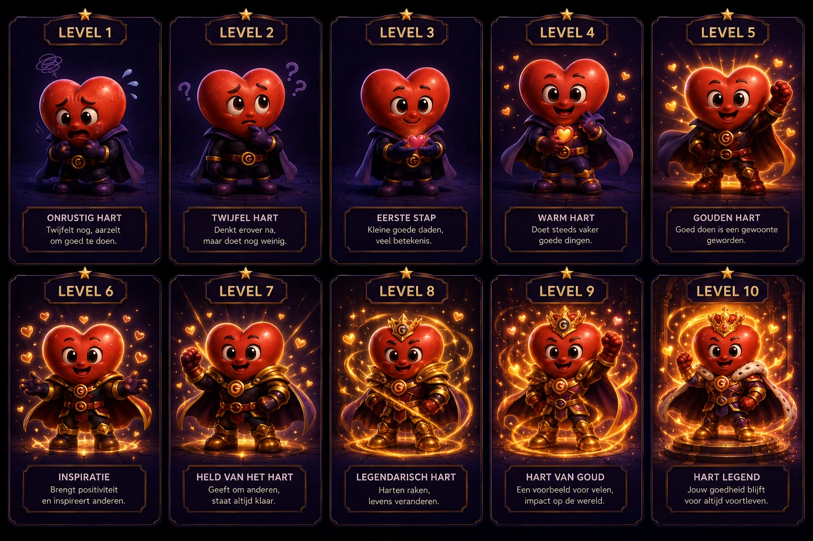

Steps · huidig
Dit zijn de tien beelden die de app nu gebruikt. Transparantie betekent hier helaas niet automatisch dat de uitsnede overal goed is.
De huidige Steps- en Good Deed-vormen naast teruggevonden bronnen. Wissel de ondergrond om achtergrondresten en randen echt te zien.
Dit zijn de tien beelden die de app nu gebruikt. Transparantie betekent hier helaas niet automatisch dat de uitsnede overal goed is.
16 september 2026 · één basisvorm, vier poses.
Nieuwer bronbestand, maar nog groene/cyaan randjes. Geen nieuwe reeks van tien levels; daarom nog niet als volledige vervanging toegepast.
Exhausted Teal Mascot Walking Cycle.png · Open volledige bron
De donkere achtergrondresten zijn vooral zichtbaar op de lichte ondergrond. Dit herstel staat nog open.

31 augustus 2026 · ontwerpkaart, geen transparante vervangende set.
Een later, correct uitgesneden Good Deed-setje is nog niet vastgesteld. Dit is de daadwerkelijke gevonden bron, zodat we geen verkeerde beelden als nieuw presenteren.
Good Deed Heart Evolution Chart.png · Open bron
Bronnen alleen naar WebP omgezet voor de website. Geen nieuwe beelden gegenereerd. Stap twee wacht op jouw signaal. Deze vergelijking verandert geen habits of voortgang.